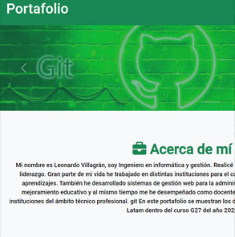
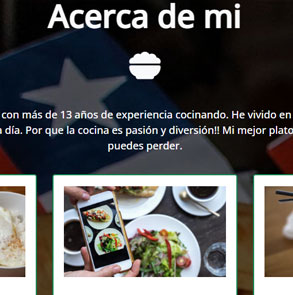
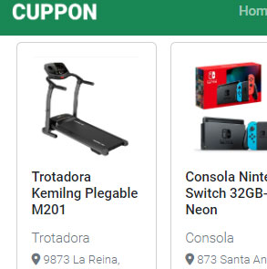
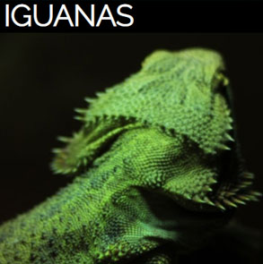
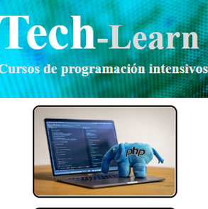

Desafíos
GITHUB PAGES
Validación de conocimientos de Github, estableciendo un flujo de trabajo colaborativo a partir de un caso. Se Despliega el proyecto en Github Pages en donde el portafolio es la página principal y posee acceso directo a los repositorios de los trabajos realizados anteriormente.
TERMINAL, GIT Y GITHUB
Aplicar las etapas del versionamiento de GIT, para mantener un repositorio de versiones, y el procedimiento de subida del código versionado mediante una conexión SSH, para la mantención de un repositorio remoto, al cual se le han aplicado varios commits.
BOOTSTRAP
Implementación de un sistema de grillas de Bootstrap, distribuyendo el contenido adecuadamente, para hacer una página web adaptable a distintos dispositivos, aplicando las clases de Bootstrap a través de los componentes card y formularios, utilizando la documentación disponible.
POSICIONAMIENTO
Validación de conocimientos de posicionamiento en CSS. A través de valores asociados a display (inline, block, inline-block), utilizando floats para posicionar texto e imágenes, y resolver el problema de colapso de floats, manteniendo la estructura de la maqueta solicitada.
CSS
Validación de conocimientos de CSS trabajados en clase y en la guía. Utilizando archivos hojas de estilo externas al documento HTML y de base para homogeneizar el diseño del sitio. Estructura de una página en términos y assets del proyecto, además de implementar bordes, margen, padding y selectores de etiqueta.
HTML

Crear un CV utilizando HTML. Manejar las etiquetas p, h1, h2, h3, a, img, title y meta. Implementar la estructura assets del proyecto revisada en la lectura.Emplear adecuadamente la estructura y sintaxis de las etiquetas de un documento, manteniendo el orden y la estructura de las distintas etiquetas.